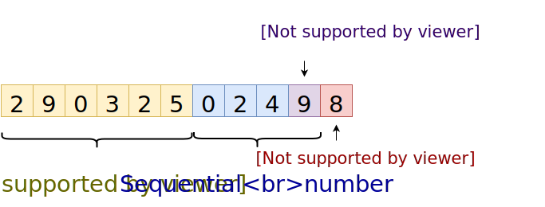

I am sure, none of you, my dear readers would use a PESEL number as a password or an encryption key. Still, as unbelievable as it may sounds, recently I was talking with my friend on a topic of computer security and he told me a horror story about a certain company doing exactly that. Such practice is highly insecure and in this post I going to prove that. Namely we will create an encrypted 7zip archive with a random PESEL as a password and then we will crack it using John the Ripper.
DISCLAIMER: All information is provided for educational purposes only. Accessing data that does not belong to you is in most cases illegal. Always check your local laws and your company policy before using tools presented in this blog post.
WTF is PESEL?
First, let me explain for non-Polish readers what is a PESEL number. Basically it is an identification number similar to US Social Security number (SSN). Every Polish citizen is assigned one unique PESEL number at birth.
But more important to us here is, that
PESEL numbers have a very well defined structure:

First six digits of a PESEL number represent a date of birth
in YYMMDD format. Of course such a simple format does not allow us
to represent birth dates after year 1999.
So there is a small twist, by adding twenty to the month number
we signify that the year is 20YY not 19YY.
For example if a person was born on 25th March 2029 we encode it
in PESEL as 292325XXXXX.
The other interesting property of a PESEL number is that one before last digit is used to encode person gender. Males are assigned only odd digits, females only even digits.
The last digit of a PESEL is a checksum that can be easily computed using other digits.
So how many PESELs are there?
Let’s assume that we intercepted a message encrypted by a PESEL number. We know that the recipient of the message is male, with age between twenty and sixty five. How much PESELs we must brute force in the worst case scenario?
(65 - 20 + 1) * 356 * 10^3 * 5 = 83_950_000How many six character passwords are there consisting of small letters and numbers?
(10 + 26)^6 = 2_176_782_336Do you consider a six character password safe? Of course not! Yet the number of possible six character passwords dwarfs the number of possible PESELs.
What is worse, is that it is usually not too difficult to find out person year of birth, thus reducing number of possible PESELs even more.
Demo time
To demonstrate how weak protection PESEL passwords provide,
we will first create an encrypted 7z archive and then
we will try to crack it using John the Ripper.
All provided instructions are for Ubuntu, but there should be no problems with running modified versions of these commands on macOS or Windows.
First we need to install 7-zip:
sudo apt-get install p7zip-full p7zip-rarThen we can create an encrypted archive:
7z a -m0=lzma2 -mx=9 -p29032502498 secret.7z secret.txt with 29032502498 PESEL as a password.
Just to make sure that the archive is indeed encrypted, we execute:
$ 7z l -slt secret.7z
(... skipped ...)
Encrypted = +
Method = LZMA2:16 7zAES:19
Block = 07zAES:19 visible in the command output means that the archive
is encrypted with AES-256 algorithm.
Meet John
To install John the Ripper we must follow instructions from the official repository. I compiled John without OpenCL and REXGEN support, YMMV though.
To allow John to crack 7z file, first we must extract a hash from
it:
./john/run/7z2john.pl secret.7z > secret.7z.hashTo make this Perl script work, I had to install this library:
sudo apt-get install libcompress-raw-lzma-perlThen I generated a suitable list of PESEL numbers
(people aged 20-65, males) using
this short program
that I wrote.
The generated file pesels.txt is about 1GB big and
consist of 82 185 000 PESEL numbers.
We are going to use it as a John the Ripper wordlist.
Now we can start cracking:
./john/run/john --wordlist=pesels.txt secret.7z.hash
# Found passwords are saved in john.pot file
cat ./john/run/john.potI performed two test. First I tried to crack a small 340B archive that you can find here. On it I achieved speed of about 100 checked PESELs per second, this means that cracking it, could take in the worst case scenario:
82 185 000 / 100 / 3600 / 24 ~ 10 daysAnd all this on my four years old i7-4771 CPU, using John without GPU support. Imagine how fast it would work on a high end Amazon EC2 instance…
Then I performed a second test, trying to crack 3MB archive containing a PDF file. There I achieved speed of about 50 PESELs per second. Not bad either (20 days in the worst case scenario).
But you don’t have to believe me here. Grab the test archive and try to crack it yourself! I encrypted it with a random PESEL generated using Bogus site. Good luck!
As we can see archives protected by PESEL numbers can be easily cracked.
Conclusion
- Do NOT use PESEL numbers neither as passwords nor as encryption keys.
- Do USE GPG if you want to send other person some secret data using email.